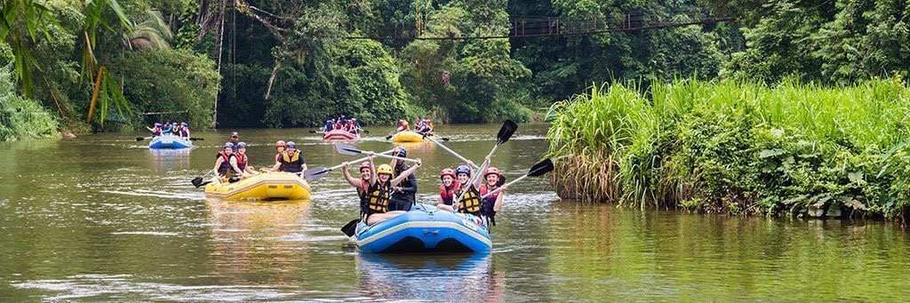
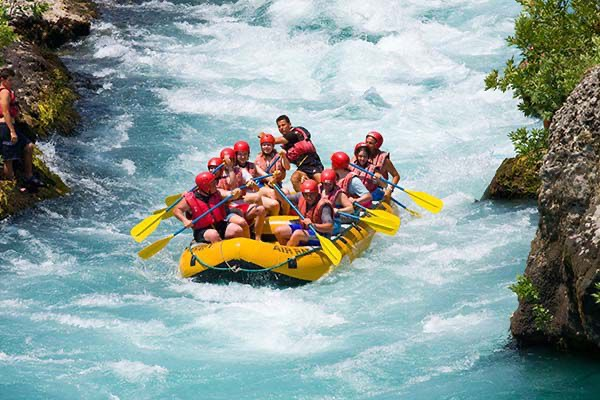

Our mission is to provide safe, fun, and unforgettable rafting experiences that bring people closer to nature and each other. Whether you’re a first-timer or an experienced rafter, we’ve got the perfect trip for you!


White Water Rafting Adventures
History
Founded in 1998, White Water Rafting Adventures began with a single raft and a dream. Over the years, we’ve grown into one of the most trusted rafting companies, guiding thousands of adventurers safely through some of the most beautiful rivers in the world.